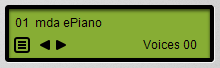

Overview¶
Installation¶
The Classic Instruments are supplied as individual Windows .DLL files for 32-bit and 64-bit systems. To install simply copy the required files into a VST2 plugin folder recognised by your DAW.
Presets¶
All the Classic Instruments can save and recall their settings as presets. These can be managed using the preset browser found on the control panel of each plugin:
Presets are stored within each plugin as a bank containing 99 slots, numbered from 01 to 99. To access each slot in turn click the left/right arrows in the central display. The number and name of each preset will appear in the upper section of the display. To view the entire bank or access a preset directly click the menu-icon in the lower part of the display to show the preset menu.
The preset menu also includes a number of preset management functions:
Save Preset - save the currently selected preset to a file.
Load Preset - load a saved preset into the currently selected slot.
Save Bank - save the current bank to a file.
Load Bank - initialise the bank from a saved bank file.
To rename a preset click on the name in the display to enter edit mode. Edit the name as required and press enter or click elsewhere to exit and save the changes. Preset names can be up to 24 characters.
Voices¶
The preset browser window also includes the voice display. This indicates the number of voices currently playing and can be found to the right of the lower section of the display.